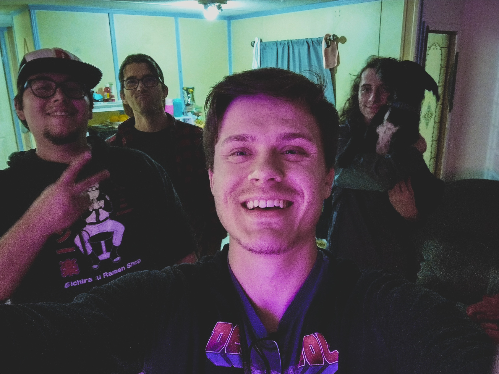
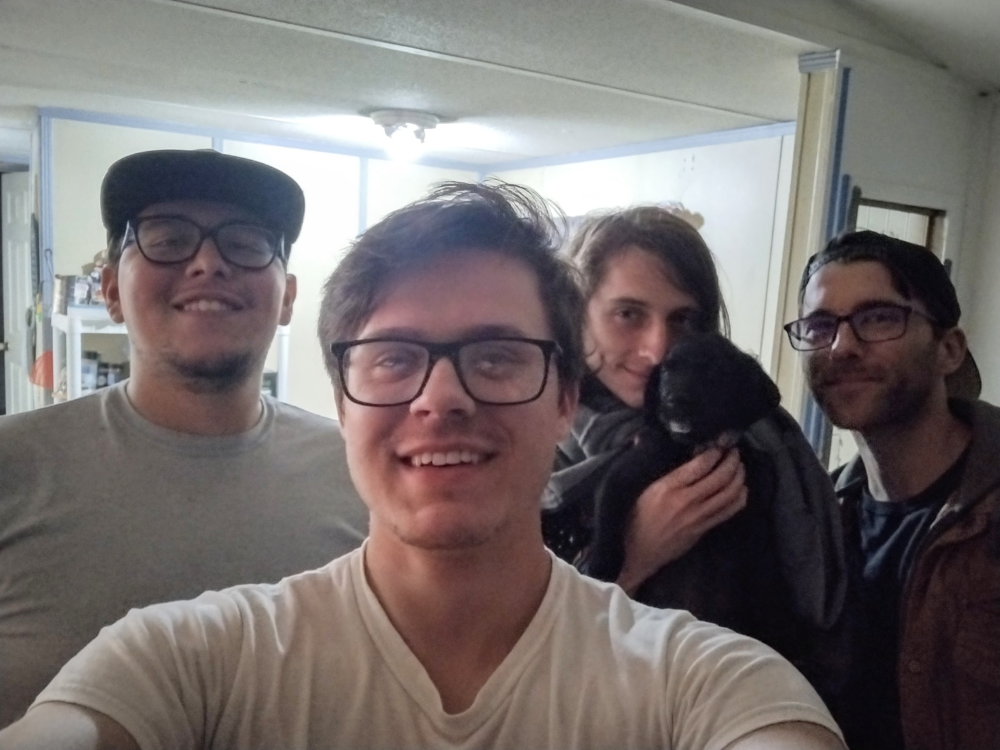

Some of my interests include...
Making Music:

I have been making music for the last 10+ years, and know how to play guitar, piano, drums, bass, and ukulele. I love piecing together different musical elements to create a unique sounds.
Hanging out with friends and family:
 One of my favorite activities is hanging out with my friends and family. Whether its having a good meal or playing games with my friends online or in person, there is nothing I would rather be doing.
Playing video games:

My favorite way to unwind from a long day is to play games for a few hours before bed. This helps me clear my mind and relax. Some of my favorite games are God of War, The Last of Us, Uncharted, and Apex Legends.